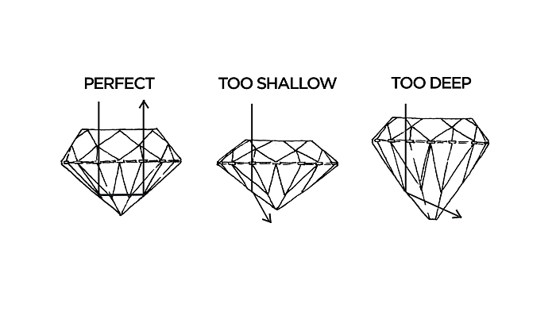

The easiest things to declare is the cut of a diamond. The most common cut is the brilliant cut with a round shape with at least 57 facets - 32 facets at the top and 24 facets at the bottom. Furthermore there are the heart cut, carrée cut, princess cut, emerald cut and many more. The higher the quality of the cut, the more sparkling the diamond looks like. This is determined by the rank of the cut which tells about the refraction. If the diamond is perfectly cut the light shines through the top, is reflected the same way out by the single facets.
To find out how exactly your diamond is cut you can have a look at the classification of the stone:
EX/ “Excellent”: only 3% of all cutted diamonds are excellently cut with perfect proportions
VG/ “very Good”: very small deviant proportions but still absolutely rare
G/ “Good”: the proportions aren’t perfect but still most part of the light gets reflected
M/ “Medium”: the diamond has a reduced billiance and the proportions are noticeable deviant
P/ “Poor”: the deviant cut reduces the reflection of the light clearly
The clarity is affected by natural processes. Nearly no diamond is perfect depending its clarity because it’s a natural product which is influenced by the pressure and heat while building itself. Clarity depends on little inclusions inside of the stone like e.g. mineral dirtying or cracks.
Any inclusions can be found in diamonds with the classification FL/ IF (“flawless/ internally flawless”). For the human eye and even under a microscope these diamonds look perfect without any disturbance.
This classification is followed by VVS (“very very small inclusions”) and VS (very small inclusions”).These diamonds aren’t perfectly clear but you can’t see by eye. The difference between these two classifications are the fact in which position the inclusion sits. A small crack directly in the middle of a diamond is worse than at the edge of the stone and therefore it would be rather VS and VVS.
If you go with the classification SI (“small inclusions”) you need to see if inclusions are notable with the human eye. Up to 85% of all diamonds with classification SI2 show inclusions which can be seen by eye.
Every diamond with more intense disturbances that SI can’t be used for jewellery.
The color also kind of determines the optical effects of the diamond. Due to the classification of color the diamond can be colorless or light yellow.
Only colorless diamonds reflect the whole spectrum of colors. These are diamonds with the so called color River - classification D and E.
Nearly colorless diamonds are the ones with the color Top Wesselton - classification F and G.
Following colors and classifications are Wesselton (H), Top Crystal (I), Crystal (J, K), Top Cape (L) and Cape (M, N).
The carat is the character of a diamond which can be classified the easiest.
One carat equals 0.2 gramm equals 100 points. However a carat doesn’t only tell about the weight of a diamond but also about its size. Therefore the dimensions and the cut of a diamond are determining.